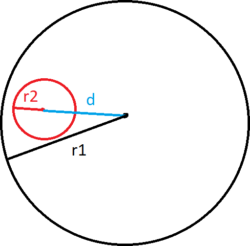

beecrowd 1039 · contenção de círculos
Flores de Fogo
Decidir se toda a área da flor permanece dentro do alcance circular do caçador.
Do desenho para a condição
O círculo de raio R₂ só está protegido quando seu ponto mais distante do centro do caçador ainda pertence ao círculo maior. Esse percurso é a distância entre os centros, d, somada ao raio da flor.
d + R₂ ≤ R₁ ⇔ d ≤ R₁ - R₂
Também precisamos de R₂ ≤ R₁. Se o raio menor for maior, elevar
R₁ - R₂ ao quadrado esconderia o sinal negativo e poderia produzir uma resposta falsa.

Por que comparar quadrados?
A distância euclidiana usa raiz quadrada, mas os dois lados da desigualdade são não negativos. Podemos comparar os quadrados e trabalhar apenas com inteiros.
(x₁ - x₂)² + (y₁ - y₂)² ≤ (R₁ - R₂)²
Tangência conta. O sinal é
≤: se a flor tocar a borda em um ponto, ela continua completamente dentro do alcance.Laboratório de contenção
Distância²
(R₁ - R₂)²
Teste executado
Tradução para Python
- Leia seis inteiros para cada caso até o fim do arquivo.
- Recuse primeiro quando
R₂ > R₁. - Compare os quadrados e imprima
RICOouMORTO.
Teste centralAbrir 1039.py
import sys
def flor_esta_protegida(r_cacador, x_cacador, y_cacador,
r_flor, x_flor, y_flor):
# Um círculo maior não pode caber dentro do círculo protetor.
if r_flor > r_cacador:
return False
# A distância entre os centros deve ser menor ou igual à diferença
# dos raios. Comparamos os quadrados e evitamos calcular uma raiz.
dx = x_cacador - x_flor
dy = y_cacador - y_flor
limite = r_cacador - r_flor
return dx * dx + dy * dy <= limite * limite
def main():
# A entrada possui seis inteiros por caso e termina em EOF.
valores = list(map(int, sys.stdin.buffer.read().split()))
respostas = []
for i in range(0, len(valores), 6):
caso = valores[i:i + 6]
protegida = flor_esta_protegida(*caso)
respostas.append("RICO" if protegida else "MORTO")
# write não cria a quebra final; por isso acrescentamos o último \n.
sys.stdout.write("\n".join(respostas) + "\n")
if __name__ == "__main__":
main()Fontes e validação
- Explicação e soluções originais — figura e condição geométrica de referência.
- Enunciado no beecrowd — formato oficial do problema.
- Documentação do módulo math — norma euclidiana; a solução evita a raiz comparando quadrados.